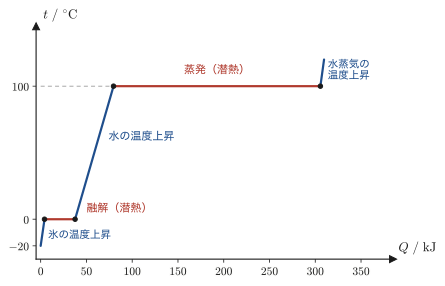
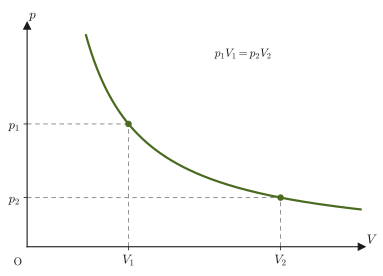
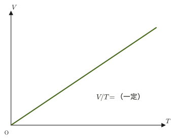
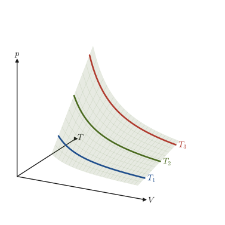
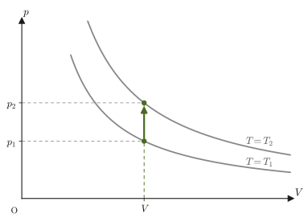
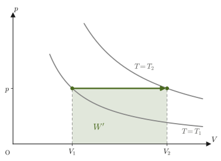
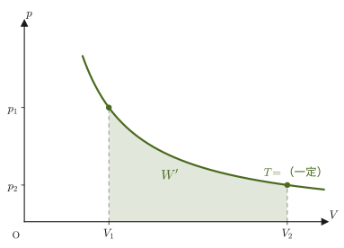
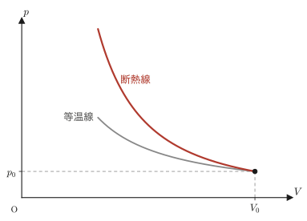
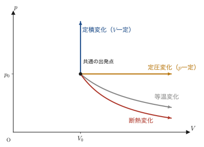
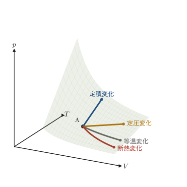

第23章熱と温度 — 気体の法則と状態変化
やかんを火にかければお湯は熱くなり，冷蔵庫に入れれば飲み物は冷える．自転車の空気入れで空気を勢いよく圧縮すると，ポンプの筒がほんのり熱をもつ．気球を膨らませた空気は，冷たい朝より暖かい昼のほうがよく膨らむ．こうした「熱い・冷たい」「膨らむ・縮む」という素朴な経験を，数値で扱える物理量（温度，熱量，圧力，体積）の間の関係として定式化するのが，これから始まる熱力学（thermodynamics）である．高校物理でも，ボイルの法則やシャルルの法則，気体の状態方程式 $pV=nRT$ を公式として学んだはずである．この章では，それらの公式が「一定量の気体は，圧力・体積・温度の間に決まった関係をもつ」という事実からどのように導かれるかを確認し，さらに，熱力学のいちばん土台にある2つの法則——エネルギー保存則を熱まで含めて拡張した熱力学第1法則と，変化の向きに制限をつける熱力学第2法則——を学ぶ．
力学では，物体の位置・速度・加速度という「目に見える」量だけで運動を記述できた．熱力学が扱う気体は，目に見えないほど小さい分子が莫大な数（$1\,\mathrm{mol}$ でおよそ $6\times10^{23}$ 個）集まってできている．一つ一つの分子の運動をすべて追いかけるのは事実上不可能だが，幸い，圧力 $p$，体積 $V$，温度 $T$ といった少数の巨視的な量（マクロな量）だけで，気体全体のふるまいをかなり正確に記述できる．これが，熱力学という学問が成立する理由である（個々の分子の運動から出発してこれらの法則を「導く」立場は，気体分子運動論として次章で学ぶ）．
この章は，第IV部「熱力学」の最初の章にあたる．第IV部の見取り図は次のとおりである．各章は上から順に読み進められるように並べてあり，どの章でも，本章で導入する記号と符号の約束（下の注意を見よ）をそのまま使い続ける．
- 第23章（本章）… 温度・熱量・内部エネルギー，熱力学の第1法則・第2法則，理想気体の状態方程式と4つの状態変化
- 第24章 … 気体分子運動論とファンデルワールスの状態方程式（本章の法則を分子の運動から理解する）
- 第25章 … 実在気体：対応状態の原理・圧縮因子・ビリアル展開
- 第26章 … 系と状態量，準静的過程と仕事（不完全微分 $\dd'Q$，$\dd'W$ を本格的に扱う）
- 第27章 … 熱容量・エンタルピーとジュール＝トムソン効果（断熱線の正確な形）
- 第28章 … カルノー・サイクルと熱機関の効率（第2法則の2つの表現の同値性を含む）
- 第29章 … エントロピー：第2法則を定量的に表す量
- 第30章 … 自由エネルギー：変化の向きと最大仕事（ヘルムホルツ自由エネルギー $A$，ギブスエネルギー $G$）
- 第31章 … 熱力学的関係式とマクスウェルの関係式
- 第32章 … 熱力学第3法則と相転移の規則
- 第33章 … 熱伝導方程式
- 第34章 … 熱統計力学への入口：マクスウェルの速度分布
- 熱運動という描像から出発し，セルシウス温度と絶対温度（ケルビン）の関係，および熱量・比熱・熱容量の定義と熱量の保存則を使えるようにする
- 内部エネルギーと熱力学第1法則 $\Delta U=Q+W$ を，本書全体で使う符号の約束（$Q$：気体が受け取った熱量，$W$：気体が外部からされた仕事，$W'$：気体が外部にした仕事，$W'=-W$）とともに理解する
- 熱力学第2法則の言明（クラウジウスの原理・トムソンの原理）と，それが変化の向きを決める法則であることを知る
- ボイルの法則・シャルルの法則から，ボイル＝シャルルの法則，さらにアボガドロの法則を合わせて理想気体の状態方程式 $pV=nRT$ を導く
- 定積変化・定圧変化・等温変化・断熱変化のそれぞれで $Q,W,\Delta U$ がどうなるかを，$p$-$V$ 図の上（曲線の傾き）で統一的に区別できるようにする
- 線膨張率 $\alpha$ と体膨張率 $\beta$ の関係 $\beta=3\alpha$ を，微小量の1次近似から導く
注意：この部（第IV部 熱力学）を通じての約束——$Q$，$W$，$W'$，$\Delta$
熱力学第1法則に現れる「仕事」の符号の取り方には，教科書や分野によって流儀が違う，という厄介な事情がある．本書では，次の記号を使い分け，第IV部のすべての章でこの約束を守る．
- $Q$ … 気体が外部から受け取った熱量（気体に熱が入るとき $Q\gt0$）
- $W$ … 気体が外部からされた仕事（気体が圧縮されるとき $W\gt0$）
- $W'$ … 気体が外部にした仕事（気体が膨張するとき $W'\gt0$）
$W$ と $W'$ は符号が反対なだけで，$W'=-W$ という関係にある．熱力学第1法則は，$W$ を使えば $\Delta U=Q+W$，$W'$ を使えば $\Delta U=Q-W'$ と書ける（23.4節で詳しく述べる）．高校物理で $\Delta U=Q+W$（$W$：された仕事）と学んだ人はそのまま，$Q=\Delta U+W'$（$W'$：した仕事）と学んだ人は $W'$ に対応させて読めばよい．工学の教科書などでは，$W$ という同じ文字を「した仕事」の意味で使い $\Delta U=Q-W$ と書く流儀もあるので，他の本を読むときは，その本がどちらの流儀を採っているかをまず確認する習慣をつけるとよい．熱機関の効率も，外部に取り出せる仕事 $W'$ を使って，第28章で $\eta=W'/Q_{\text{吸収}}$ と定義する．
もう1つ，記号 $\Delta$（デルタ）は「変化後の値 $-$ 変化前の値」を表す．たとえば $\Delta U=U_{\text{後}}-U_{\text{前}}$ である．（微小な変化を表す記号 $\dd$，$\dd'$ は23.4節で説明する．）
23.1 熱運動と温度の目盛り
身のまわりの物質は，低温から高温になるに従って，一般に固体（solid）→液体（liquid）→気体（gas）の順に変化する．この3つの状態を物質の三態という．氷（固体）を温めると水（液体）になり，さらに温めると水蒸気（気体）になるのが典型例である．三態のどれであっても，物質を構成する分子は静止しているわけではなく，たえず不規則な運動を続けている．この分子の運動を熱運動（thermal motion）といい，温度が高いほど激しくなる．固体では分子は決まった位置のまわりで小刻みに振動し，液体では互いにすり抜けながら位置を変え，気体では容器いっぱいに飛び回る——という違いはあるが，「分子が絶えず動いている」こと自体はどの状態でも共通である．この「温度＝分子運動の激しさの目安」という描像は，次章（気体分子運動論）で定量的に扱う．
温度を数値で表すための目盛りにはいくつかの流儀があるが，日常でもっともよく使うのがセルシウス温度である．
定義23.1 セルシウス温度（Celsius temperature）
1気圧のもとでの純粋な水の凝固点（氷になる温度）と沸点（沸騰する温度）を，それぞれ $0\ {}^{\circ}\mathrm{C}$，$100\ {}^{\circ}\mathrm{C}$ と定め，その間を100等分して，各間隔を $1\ {}^{\circ}\mathrm{C}$ とする温度目盛りをセルシウス温度（摂氏温度）という．（現在の国際単位系では，後で導入する絶対温度 $T$ から $t=T-273.15$ によってセルシウス温度を定めている．この定義のもとでも，1気圧の水の凝固点・沸点はほぼ $0\ {}^{\circ}\mathrm{C}$，$100\ {}^{\circ}\mathrm{C}$ である．）
ところが，セルシウス温度には$0\ {}^{\circ}\mathrm{C}$ より低い温度（負の値）がいくらでも存在し，「温度がどこまで下げられるか」という下限がこの目盛りからは見えない．熱力学第1法則・第2法則（23.4節）や，次章で学ぶ気体分子運動論を扱うには，分子運動が完全に止まる（正確には，量子力学的な効果で完全には止まらないが，古典的にはそう考えてよい）温度を原点とする目盛りのほうが都合がよい．そこで導入されるのが絶対温度である．
定義23.2 絶対温度（absolute temperature）
セルシウス温度 $-273\ {}^{\circ}\mathrm{C}$ を $0\ \mathrm{K}$（絶対零度，absolute zero）とし，セルシウスの温度目盛りと同じ間隔の目盛りを用いる温度を絶対温度という．単位の名称はケルビン（kelvin），記号は大文字の $\mathrm{K}$（人名に由来する記号なので大文字．度の記号 $°$ は付けない）を用いる．目盛りの間隔がセルシウス温度と同じなので，セルシウス温度 $t\ [{}^{\circ}\mathrm{C}]$ と絶対温度 $T\ [\mathrm{K}]$ の間には
\begin{equation} T=t+273 \label{eq:23-celsius-kelvin} \end{equation}という関係が成り立つ（より精密には $T=t+273.15$ であるが，本書では特に断らない限り $273$ で近似する）．また，絶対温度には $0\ \mathrm{K}$ より低い温度は存在しない．
イメージ：なぜ絶対零度より低い温度がないのか
温度を「分子運動の激しさの目安」ととらえると，絶対零度は「分子運動が（古典的には）完全に止まった状態」に対応する．運動の激しさに「これ以上激しい」という上限はなくても，「これ以上おだやかな（止まった）」状態には下限がある——これが，絶対温度に下限 $0\ \mathrm{K}$ があり，セルシウス温度には下限がないことの直感的な理由である．厳密には，内部エネルギーと温度の関係（23.3節）や気体分子運動論（次章）を学ぶとより正確に理解できる．
例題23.1 セルシウス温度と絶対温度の変換
(1) 室温 $27\ {}^{\circ}\mathrm{C}$ は絶対温度で何 $\mathrm{K}$ か． (2) 液体窒素の沸点は $1$ 気圧のもとで $77\ \mathrm{K}$ である．これはセルシウス温度で何 ${}^{\circ}\mathrm{C}$ か．
解答 (1) 式 \eqref{eq:23-celsius-kelvin} に $t=27$ を代入すると，
$$ T=27+273=300\ \mathrm{K} $$である（ちょうど $300\ \mathrm{K}$ になるように室温の例として選んだ数値である）．
(2) 式 \eqref{eq:23-celsius-kelvin} を $t$ について解くと $t=T-273$ となるので，$T=77$ を代入して，
$$ t=77-273=-196\ {}^{\circ}\mathrm{C} $$である．液体窒素は $-196\ {}^{\circ}\mathrm{C}$（$77\ \mathrm{K}$）という低温の液体であることがわかる．
23.2 熱量・比熱・熱容量と熱量の保存
19世紀にジュール（Joule）は，おもりを落下させて水をかき混ぜる実験などから，力学的な仕事と熱が同等なものであることを実験的に示した．この結果，熱量の単位には力学的な仕事と同じジュール $[\mathrm{J}]$（$=[\mathrm{N\cdot m}]$）が使われる．歴史的には熱量の単位としてカロリー（$\mathrm{cal}$）も使われており，換算は
$$ 1\ \mathrm{cal}\approx4.2\ \mathrm{J} $$である（正確には，熱化学で使うカロリーは $1\ \mathrm{cal}=4.184\ \mathrm{J}$ と定義される．本書では $4.2\ \mathrm{J}$ に丸めて使う）．栄養学や生理学の分野では今でも $\mathrm{cal}$（またはその1000倍の $\mathrm{kcal}$）がよく使われるので，換算式は覚えておくとよい．
定義23.3 比熱（specific heat）
物質 $1\ \mathrm{g}$ の温度を $1\ \mathrm{K}$ 上げるのに必要な熱量を，その物質の比熱という．単位は $[\mathrm{J/(g\cdot K)}]$ を用いる．比熱は物質によって異なる．
イメージ：比熱の値が高いほど暖まりにくい
比熱は「同じ熱量を与えたときに温度がどれだけ上がりにくいか」の指標である．比熱が大きい物質ほど，同じ熱量を加えても温度上昇は小さい——つまり暖まりにくく，逆に冷めにくい．水の比熱は $4.2\ \mathrm{J/(g\cdot K)}$（$=1\ \mathrm{cal/(g\cdot K)}$）であり，これは身近な物質の中でもかなり大きい部類に入る．夏の水辺が周囲より涼しく，海に近い地域で気温の変化が穏やかなのは，水のこの性質（比熱が大きいこと）による．一方，金属の比熱は総じて小さく（例えば鉄は約 $0.45\ \mathrm{J/(g\cdot K)}$，アルミニウムは約 $0.90\ \mathrm{J/(g\cdot K)}$），同じ熱量ですぐに温度が上がる．フライパンがすぐ熱くなるのはこのためである．
定義23.4 熱容量（heat capacity）
物体（質量 $m\ [\mathrm{g}]$ の，ある特定の1個の物体）の温度を $1\ \mathrm{K}$ 上げるのに必要な熱量を，その物体の熱容量という．単位は $[\mathrm{J/K}]$ を用いる．比熱が「物質1gあたり」の量（示強変数的な量）であるのに対し，熱容量は「その物体まるごと」の量（示量変数的な量．本節の後半の定義23.6）であり，比熱 $c$ の物質でできた質量 $m$ の物体の熱容量は $mc$ である．
比熱・熱容量を使うと，物体に加えた（あるいは物体から取り去った）熱量を，温度の変化から計算できる．
公式23.1 熱量の計算
質量 $m$（$\mathrm{g}$），比熱 $c$ の物体の温度が $T_1$ から $T_2$ に変わるとき，物体が受け取る熱量 $Q$ は，熱容量を $C=mc$ として，
\begin{equation} Q=mc\Delta T=C\Delta T,\qquad \Delta T=T_2-T_1 \label{eq:23-heat-quantity} \end{equation}である．$Q\gt0$ なら吸収，$Q\lt0$ なら放出を表す．温度の「差」$\Delta T$ は，セルシウス温度で測っても絶対温度で測っても同じ値になる（式 \eqref{eq:23-celsius-kelvin}）ので，どちらの温度で計算してもよい．
この関係は，異なる温度の物体を接触させたときに何が起こるかを調べるのに使える．
法則23.1 熱量の保存
高温の物体Aと低温の物体Bを接触させたとき，外部（周囲の空気など）へ熱が逃げたり，外部から熱が入ってきたりしなければ，Aが失う熱量はBが得る熱量に等しい．これを熱量の保存という．AとBの温度が等しくなり，それ以上熱の移動が起こらなくなった状態を，AとBは熱平衡（thermal equilibrium）であるという．なお，この保存則が成り立つのは，AとBの間で仕事のやりとり（かき混ぜる，こする，など）がないときだけである．仕事も含めた一般のエネルギー保存則が熱力学第1法則である（23.4節）．
注意：熱量の保存と力学的エネルギー保存則の類似
熱量の保存は，力学で学んだ力学的エネルギー保存則（摩擦などの非保存力が仕事をしなければ，運動エネルギーと位置エネルギーの和が一定に保たれる，第4章）とよく似た構造をもつ——「外部とのやりとりがなければ，全体の量（この場合は熱量）は保存される」という点で，どちらもエネルギー保存則の一種である．実際，23.4節で学ぶ熱力学第1法則は，力学的エネルギー保存則を熱まで含めて拡張したものになっている．
定義23.5 融解熱と蒸発熱（潜熱）
物質 $1\ \mathrm{g}$ が融解する（固体から液体になる）のに必要な熱量を融解熱，物質 $1\ \mathrm{g}$ が蒸発する（液体から気体になる）のに必要な熱量を蒸発熱という．融解熱や蒸発熱のように，温度上昇にではなく，状態の変化（相変化）に使われる熱を潜熱（latent heat）という．
潜熱は「温度が上がらないのにどこへ熱が消えたのか」と誤解されやすいが，実際には分子どうしを引き離す（固体→液体，液体→気体）ために使われている．たとえば氷を加熱し続けても，融解が終わるまでは温度が $0\ {}^{\circ}\mathrm{C}$ のまま変わらない．加えた熱はすべて，氷の結晶構造を壊して水分子を自由に動けるようにする仕事に使われているのである．
単位質量（$1\ \mathrm{g}$）あたりの潜熱を $L$（融解熱・蒸発熱．単位 $\mathrm{J/g}$）とすると，質量 $m$ の物質が相変化するのに必要な熱量は，
\begin{equation} Q=mL \label{eq:23-latent-heat} \end{equation}である．1気圧の水では，融解熱 $L_{\mathrm{f}}\approx334\ \mathrm{J/g}$（$0\ {}^{\circ}\mathrm{C}$），蒸発熱 $L_{\mathrm{v}}\approx2.26\times10^3\ \mathrm{J/g}$（$100\ {}^{\circ}\mathrm{C}$）である．蒸発熱のほうが融解熱の約7倍（$2260/334\approx6.8$）も大きいのは，液体では分子どうしがまだ引き合っているのに対し，気体にするときは分子を互いに遠く引き離さなければならないからである．
例題23.2 熱量の保存と混合後の温度
比熱 $0.90\ \mathrm{J/(g\cdot K)}$，質量 $200\ \mathrm{g}$ のアルミニウム塊（温度 $20\ {}^{\circ}\mathrm{C}$）を，質量 $300\ \mathrm{g}$，温度 $80\ {}^{\circ}\mathrm{C}$ の熱湯（比熱 $4.2\ \mathrm{J/(g\cdot K)}$）の中に入れた．外部との熱のやりとりがないとして，熱平衡に達したときの温度 $T\ [{}^{\circ}\mathrm{C}]$ を求めよ．
解答 法則23.1（熱量の保存）より，水が失う熱量とアルミニウムが得る熱量は等しい．熱平衡温度を $T$ とすると，水の温度は $80\to T$（下がる），アルミニウムの温度は $20\to T$（上がる）ので，
$$ \underbrace{m_{\text{水}}c_{\text{水}}(80-T)}_{\text{水が失う熱量}}=\underbrace{m_{\text{Al}}c_{\text{Al}}(T-20)}_{\text{Alが得る熱量}} $$に数値を代入すると，
$$ 300\times4.2\times(80-T)=200\times0.90\times(T-20) $$ $$ 1260(80-T)=180(T-20) $$左辺・右辺をそれぞれ展開すると，
$$ 100800-1260T=180T-3600 $$$T$ を含む項を右辺に，定数項を左辺に集めると，
$$ 100800+3600=180T+1260T \qquad\therefore\ 104400=1440T $$したがって，
$$ T=\frac{104400}{1440}=72.5\ {}^{\circ}\mathrm{C} $$である．熱容量の大きい水（$300\times4.2=1260\ \mathrm{J/K}$）が，熱容量の小さいアルミニウム（$200\times0.90=180\ \mathrm{J/K}$）よりずっと「温度を変えにくい」ため，平衡温度は水の初期温度 $80\ {}^{\circ}\mathrm{C}$ に近い値になっている．
例題23.3 氷を水蒸気にするのに必要な熱量
$0\ {}^{\circ}\mathrm{C}$ の氷 $100\ \mathrm{g}$ を，1気圧のもとで $100\ {}^{\circ}\mathrm{C}$ の水蒸気にするのに必要な熱量 $Q$ を求めよ．融解熱を $334\ \mathrm{J/g}$，蒸発熱を $2.26\times10^3\ \mathrm{J/g}$，水の比熱を $4.2\ \mathrm{J/(g\cdot K)}$ とする．
解答 次の3つの段階に分けて，それぞれに必要な熱量を足し合わせる．
(i) $0\ {}^{\circ}\mathrm{C}$ の氷が融けて $0\ {}^{\circ}\mathrm{C}$ の水になる（潜熱，式 \eqref{eq:23-latent-heat}）：
$$ Q_1=mL_{\mathrm{f}}=100\times334=3.34\times10^4\ \mathrm{J} $$(ii) $0\ {}^{\circ}\mathrm{C}$ の水が $100\ {}^{\circ}\mathrm{C}$ の水になる（比熱，式 \eqref{eq:23-heat-quantity}．$\Delta T=100\ \mathrm{K}$）：
$$ Q_2=mc\Delta T=100\times4.2\times100=4.2\times10^4\ \mathrm{J} $$(iii) $100\ {}^{\circ}\mathrm{C}$ の水が $100\ {}^{\circ}\mathrm{C}$ の水蒸気になる（潜熱）：
$$ Q_3=mL_{\mathrm{v}}=100\times2.26\times10^3=2.26\times10^5\ \mathrm{J} $$したがって，
$$ Q=Q_1+Q_2+Q_3=3.34\times10^4+4.2\times10^4+2.26\times10^5=3.014\times10^5\approx3.0\times10^5\ \mathrm{J} $$である．全体の約 $75\ \%$（$Q_3/Q\approx0.75$）が蒸発の潜熱に使われている．加えた熱量と温度の関係をグラフにすると，比熱の分は傾いた部分，潜熱の分は温度が変わらない水平な部分になる（図23.1）．

応用：水の大きな比熱と蒸発熱
水は比熱も蒸発熱も物質の中でとくに大きい．そのため，水は熱をたくさん蓄えて運べる冷却材・熱媒体として，エンジンの冷却水，発電所の冷却，床暖房や温水暖房などに広く使われている．海辺で昼夜の気温差が小さく，昼に陸から海へ，夜に海から陸へ風（海風・陸風）が吹くのも，水が陸地より温まりにくく冷めにくい（比熱が大きい）ことによる．また，汗や打ち水が蒸発するとき，$1\ \mathrm{g}$ あたり約 $2.26\times10^3\ \mathrm{J}$ もの蒸発熱が周囲から奪われるので，体や地面が涼しくなる．
定義23.6 示量変数と示強変数
物質の量（分子の個数や質量）に比例して大きくなる変数を示量変数（extensive variable）という（例：体積 $V$，内部エネルギー $U$，物質量 $n$，質量 $m$）．一方，物質の量とは無関係に決まる変数を示強変数（intensive variable）という（例：圧力 $p$，温度 $T$，密度）．
イメージ：示量変数と示強変数の見分け方
コップ1杯の水を思い浮かべ，同じ水をもう1杯用意して合わせるとどうなるかを考えるとよい．体積は2倍，質量は2倍，内部エネルギーも2倍になる——これらは示量変数である．一方，温度はもとの水と同じ温度のままだし（同じ温度の水を混ぜても温度は変わらない），圧力も変わらない——これらは示強変数である．「2つを合わせたら量として足し算できるか（できれば示量変数）」がおおまかな判定基準になる．この区別は，本章の熱容量（示量変数：物体の質量に比例する）と比熱（示強変数：物質1gあたりで決まり，量によらない）の違いにも現れており，後の章でエントロピーや自由エネルギーを学ぶときにも重要になる．
23.3 内部エネルギー
気体を構成している分子・原子などの粒子は，熱運動による運動エネルギーと，粒子どうしに働く力（分子間力）による位置エネルギーをもっている．
定義23.7 内部エネルギー（internal energy）
物体を構成する粒子（分子・原子）がもつ，熱運動による運動エネルギーと，粒子間力による位置エネルギーの総和を，その物体の内部エネルギー $U\ [\mathrm{J}]$ という．
内部エネルギーは粒子すべてのエネルギーの総和なので，物体の量（物質量 $n$）に比例して大きくなる．同じ状態の気体を2つ合わせれば $U$ も2倍になる——したがって，内部エネルギーは示量変数である（定義23.6）．
温度との関係は物質によって異なる．理想気体（分子間力が無視できるほど希薄な気体．23.6節）では，分子間力による位置エネルギーがなく，$U$ は分子の熱運動の運動エネルギーだけで決まる．そのため，$U$ は体積によらず絶対温度 $T$ だけで決まり，$T$ に比例する（単原子分子の理想気体では $U=\tfrac32nRT$．ここで単原子分子とは，He，Ne，Ar のように1個の原子がそのまま1つの分子になっている気体のことである）．この関係は，気体分子運動論（次章）で，分子1個あたりの平均運動エネルギーが絶対温度 $T$ に比例することから導かれる．本章では，まずこの事実を認めたうえで，内部エネルギーの変化 $\Delta U$ が熱や仕事とどう結びつくかを見ていく．
注意：「内部エネルギーは絶対温度に比例する」のは理想気体だけ
固体・液体や，分子間力が無視できない実在気体では，位置エネルギーの分だけ $U$ は体積などにも依存し，温度だけでは決まらない．たとえば氷が融ける間は，温度が $0\ {}^{\circ}\mathrm{C}$ のまま一定でも，加えた熱（潜熱）の分だけ $U$ は増加する（23.2節）．実在気体で $U$ が体積にどう依存するかは，第24〜27章（第24章，第27章）で扱う．本章の「$U\propto T$」「等温なら $\Delta U=0$」は，いずれも理想気体についての結果である．
例題23.4 内部エネルギーの温度依存性
同じ物質量の理想気体を，絶対温度 $300\ \mathrm{K}$ の状態Aと，絶対温度 $450\ \mathrm{K}$ の状態Bとで比べる．理想気体の内部エネルギーは絶対温度に比例する（23.3節）ことを用いて，状態Bの内部エネルギーは状態Aの内部エネルギーの何倍かを求めよ．
解答 理想気体の内部エネルギー $U$ は絶対温度 $T$ に比例するので，比例定数を $c$（気体の種類と量だけで決まる正の定数）とおくと $U=cT$ と書ける．したがって，
$$ \frac{U_{\mathrm B}}{U_{\mathrm A}}=\frac{cT_{\mathrm B}}{cT_{\mathrm A}}=\frac{T_{\mathrm B}}{T_{\mathrm A}}=\frac{450}{300}=1.5 $$である．すなわち，状態Bの内部エネルギーは状態Aの $1.5$ 倍である．ここで，セルシウス温度に直すと $T_{\mathrm A}=27\ {}^{\circ}\mathrm{C}$（例題23.1(1)と同じ室温），$T_{\mathrm B}=177\ {}^{\circ}\mathrm{C}$ となるが，セルシウス温度の比 $177/27\approx6.6$ 倍は，上で求めた $1.5$ 倍とはまったく違う値になる．内部エネルギーが比例するのは絶対温度に対してだけであり，原点がずれているセルシウス温度に対しては比例関係は成り立たない——これも，絶対温度という目盛り（23.1節）を導入する動機の1つになっている．
23.4 熱力学第1法則と第2法則
力学的エネルギー保存則（第4章）は，「摩擦などの非保存力が仕事をしなければ，運動エネルギーと位置エネルギーの和は変化しない」という法則だった．気体を扱うときは，これに「熱のやりとり」という新しい要素を付け加える必要がある．気体に熱を加えれば，仕事をしなくても内部エネルギーは増加するからである．この，熱まで含めたエネルギー保存則が熱力学第1法則である．
法則23.2 熱力学第1法則
気体が外部から得た熱量を $Q\ [\mathrm{J}]$，気体が外部からされた仕事を $W\ [\mathrm{J}]$ とおくと，気体の内部エネルギーの増加量 $\Delta U\ [\mathrm{J}]$ は，
\begin{equation} \Delta U=Q+W \label{eq:23-first-law} \end{equation}となる．符号の約束は次のとおりである．
(i) $Q$ について … 気体に熱が入るとき $Q\gt0$，気体から熱が出るとき $Q\lt0$．
(ii) $W$ について … 気体が圧縮されるとき $W\gt0$，気体が膨張するとき $W\lt0$．
イメージ：熱力学第1法則は「熱まで含めたエネルギー保存則」
式 \eqref{eq:23-first-law} の右辺には，$Q$（熱として入ってくるエネルギー）と $W$（仕事としてされるエネルギー）の2つの経路が現れている．内部エネルギーは，このどちらの経路からエネルギーが入ってきても増加する——気体をコンロで温めても（$Q$ の経路），ピストンで押しつぶしても（$W$ の経路），どちらも内部エネルギーを増やせる，ということである．力学だけを学んでいたときは仕事の経路（$W$）しか見えていなかったが，熱力学第1法則は，そこに熱の経路（$Q$）を対等な資格で付け加えたエネルギー保存則になっている．気体の変化のしかたを考えるうえで，もっとも基本的な法則である．
すでにこの部を通じての約束で述べたとおり，「した仕事」$W'$（$W'=-W$）を使うと，式 \eqref{eq:23-first-law} は
\begin{equation} \Delta U=Q-W' \label{eq:23-first-law-wprime} \end{equation}と書き直せる．どちらの形も同じ内容を表しているので，問題に応じて使いやすいほうを選べばよい．たとえば「気体が外部にする仕事」（エンジンが取り出す仕事など）を主役にしたいときは式 \eqref{eq:23-first-law-wprime} のほうが見通しがよい．
定義23.8 した仕事 $W'$
気体が外部にした仕事を $W'\ [\mathrm{J}]$ と書く．気体が膨張してピストンを押し出すときの仕事がこれにあたる．された仕事 $W$ との関係は $W'=-W$ である（気体が圧縮されるとき，外部からされた仕事 $W$ は正で，気体が外部にした仕事 $W'$ は負——外に仕事をするどころか，外から仕事をされているのだから当然である）．
イメージ：微小変化の第1法則と記号 $\dd'$——状態量と，経路によって変わる量
変化がごく小さいとき（微小変化），第1法則は次のように書く．
\begin{equation} \dd U=\dd'Q+\dd'W \label{eq:23-first-law-diff} \end{equation}ここで大事なのは，$U$ と $Q$，$W$ の性格の違いである．内部エネルギー $U$ は，気体の状態（$p,V,T$）が決まれば1つに決まる量（状態量）なので，微小な変化 $\dd U$ は「変化後の $U$ $-$ 変化前の $U$」であり，途中の道すじによらない．これに対して $Q$ と $W$ は，同じ状態から同じ状態へ移るときでも，途中のたどり方（経路）によって値が変わる量である．実際，23.7節で見るように，同じ温度上昇でも，定積変化なら $Q=\Delta U$，定圧変化なら $Q=\Delta U+p\Delta V$ と，必要な熱量が違う．そこで，状態量の微小変化には立体の $\dd$ を使って $\dd U$ と書き，経路によって値が変わる量の微小量には「$'$」を付けて $\dd'Q$，$\dd'W$ と書いて区別する（これらを不完全微小量という．「$Q$ の変化量」ではなく「微小な熱量」「微小な仕事」の意味である．詳しくは26.6節で扱う）．
微小な仕事は，ピストンの押し出しから求まる．断面積 $S$ のピストンが，外圧 $p_{\mathrm{ex}}$（ピストンの外側から押す圧力）に逆らって $\dd x$ だけ押し出されるとき，気体が外部にする仕事は「（力）$\times$（距離）」で，外圧による力が $p_{\mathrm{ex}}S$，体積の増加が $\dd V=S\,\dd x$ であることから，$\dd'W'=(p_{\mathrm{ex}}S)\,\dd x=p_{\mathrm{ex}}\dd V$ となる．$W=-W'$ なので，
\begin{equation} \dd'W'=p_{\mathrm{ex}}\dd V,\qquad \dd'W=-p_{\mathrm{ex}}\dd V \label{eq:23-dwork} \end{equation}膨張（$\dd V\gt0$）では $\dd'W\lt0$，圧縮（$\dd V\lt0$）では $\dd'W\gt0$ で，法則23.2 (ii) の符号と一致している．変化がじゅうぶんゆっくり（準静的）なら，外圧と気体の圧力はつり合っていて $p_{\mathrm{ex}}=p$ としてよい．一般の場合の仕事は26.7節で扱う．
法則23.3 熱力学第2法則
クラウジウス（Clausius）の原理 熱はひとりでに低温の物体から高温の物体に移動しない．
トムソン（Thomson，のちのケルビン卿）の原理 1つの熱源から受け取った熱を，ほかに何の変化も残さずに，そのすべてを仕事に変える（サイクルとして繰り返し働き続ける）ことはできない．
この2つは，表現は違うが同じ内容を述べている（等価であることの証明は28.1節で行う）．
注意：「熱を全部は仕事に変えられない」の意味
等温膨張では，加えた熱 $Q$ が，すべて気体の外部への仕事 $W'$ に変わる（$Q=W'$，23.8.1節）．これは法則23.3に反しない．そのとき気体の体積が増えるという変化が後に残っているからである．もとの状態に戻して同じ操作を繰り返す（サイクルとして働き続ける）には，圧縮して体積を戻さなければならず，そのために取り入れた熱の一部を低温側へ捨てなければならない．「熱を全部仕事に変え，しかも他に何の変化も残さない」ことができない，というのが法則23.3の意味である．
イメージ：熱力学第2法則は変化の向きを決める法則
熱力学第1法則（エネルギー保存則）だけでは，「熱いコーヒーが自然に冷める」ことは説明できても，「冷めたコーヒーがひとりでに熱くなる」ことが起こらない理由は説明できない——エネルギーの収支だけを見れば，後者もエネルギー保存則には反していないからである．熱力学第2法則は，こうした「起こる変化と起こらない変化」を区別する法則であり，不可逆変化（一度起きたら自然にはもとに戻らない変化）が進む向きを決める法則である．第2法則を，エントロピーという量を使ってより定量的に表す方法は，カルノー・サイクル（第28章）で熱機関の効率の限界を調べたあと，第29章で学ぶ．
例題23.5 熱力学第1法則の符号の判定
ピストン付きのシリンダーに入った理想気体を，ゆっくりと圧縮しながら，同時に外部から冷却して温度を一定に保つ操作を考える．このとき，$Q$，$W$，$\Delta U$ の符号（正・負・0）をそれぞれ判定せよ．
解答 気体は圧縮されているので，法則23.2 (ii) より $W\gt0$（外部からされた仕事は正）である．一方，温度が一定に保たれているということは，理想気体の内部エネルギー $U$ が絶対温度だけで決まる量（23.3節）であることから，$\Delta U=0$ である．したがって，式 \eqref{eq:23-first-law} $\Delta U=Q+W$ に $\Delta U=0,\ W\gt0$ を代入すると，
$$ 0=Q+W \qquad\therefore\ Q=-W\lt0 $$となり，$Q\lt0$（気体から熱が出ていく）と判定できる．物理的には，外部から仕事をされて増えようとする内部エネルギーの分を，ちょうど同じ量だけ冷却（放熱）で相殺している，という状況である．これは23.8節で学ぶ「等温変化」そのものであり，そこで一般の場合として改めて確認する．
23.5 ボイルの法則・シャルルの法則とボイル＝シャルルの法則
ここからは，気体そのものの圧力 $p$，体積 $V$，絶対温度 $T$ の間にどんな関係があるかを見ていく．高校物理で学んだはずの2つの法則から出発する．
記号と単位：圧力とリットル
圧力 $p$ は，面積 $S$ の面を垂直に押す力 $F$ を使って $p=F/S$ と表され，単位はパスカル（$\mathrm{Pa}$）で，$1\ \mathrm{Pa}=1\ \mathrm{N/m^2}$ である．大気圧の目安として 1気圧（$1\ \mathrm{atm}$）$=1.013\times10^5\ \mathrm{Pa}$ もよく使う．体積の単位はリットル（本書では大文字の $\mathrm{L}$ と書く）で，$1\ \mathrm{L}=10^{-3}\ \mathrm{m^3}$ である．
法則23.4 ボイルの法則（Boyle's law）
温度が一定のとき，一定量の気体の圧力 $p\ [\mathrm{Pa}]$ は，体積 $V\ [\mathrm{m^3}]$ に反比例する：
\begin{equation} pV=(\text{一定})\qquad(\text{温度一定}) \label{eq:23-boyle} \end{equation}イメージ：なぜ体積を小さくすると圧力が上がるのか
気体の圧力は，容器の壁に分子がぶつかる勢いの合計として生まれる（この描像は次章の気体分子運動論で定量化する）．同じ温度（＝分子の平均的な速さが変わらない）のまま体積を小さくすると，同じ数の分子がより狭い空間に閉じ込められることになり，単位時間・単位面積あたりに壁へ衝突する回数が増える．これが，体積が小さくなるほど圧力が上がる直感的な理由である．また，気体の温度を上げれば上げるほど，気体の内部エネルギーが増大し，同じ体積を保つにも，より大きな圧力が必要になる（23.6節で状態方程式として定量的に確認する）．

p2）がp1V1=p2V2を満たす" style="max-width:560px;width:100%">例題23.6 ボイルの法則による圧力の計算
圧力 $1.0\times10^5\ \mathrm{Pa}$，体積 $2.0\times10^{-3}\ \mathrm{m^3}$ の気体を，温度を一定に保ったまま，体積が半分の $1.0\times10^{-3}\ \mathrm{m^3}$ になるまで圧縮した．圧縮後の圧力を求めよ．
解答 温度が一定なので，法則23.4（ボイルの法則）$p_1V_1=p_2V_2$（式 \eqref{eq:23-boyle}）が使える．$p_1=1.0\times10^5\ \mathrm{Pa}$，$V_1=2.0\times10^{-3}\ \mathrm{m^3}$，$V_2=1.0\times10^{-3}\ \mathrm{m^3}$ を代入すると，
$$ p_2=\frac{p_1V_1}{V_2}=\frac{1.0\times10^5\times2.0\times10^{-3}}{1.0\times10^{-3}}=2.0\times10^5\ \mathrm{Pa} $$である．体積が半分になると圧力はちょうど2倍になる——これは，図23.3で確かめた「体積が半分になるごとに圧力が2倍になる」という関係を，実際の数値で確認したものにほかならない．
法則23.5 シャルルの法則（Charles's law）
圧力が一定のとき，一定量の気体の体積 $V\ [\mathrm{m^3}]$ は，絶対温度 $T\ [\mathrm{K}]$ に比例する：
\begin{equation} \frac{V}{T}=(\text{一定})\qquad(\text{圧力一定}) \label{eq:23-charles} \end{equation}イメージ：高校で習う $V=V_0(1+t/273)$ と絶対温度
高校では，シャルルの法則を「圧力が一定のとき，$0\ {}^{\circ}\mathrm{C}$ での体積を $V_0$ とすると，$t\ {}^{\circ}\mathrm{C}$ での体積は $V=V_0\left(1+\dfrac{t}{273}\right)$ である」という形で学ぶ．$T=t+273$（式 \eqref{eq:23-celsius-kelvin}）を使うと，
$$ V=V_0\,\frac{273+t}{273}=\frac{V_0}{273}\,T\qquad\therefore\ \frac{V}{T}=\frac{V_0}{273}\ (\text{一定}) $$となり，法則23.5と同じ内容になる．この式で $t=-273\ {}^{\circ}\mathrm{C}$（$T=0$）とおくと $V=0$ になる．つまり，温度を下げていくと体積が直線的に減り，$-273\ {}^{\circ}\mathrm{C}$ で $0$ になる——絶対温度の目盛りの原点（絶対零度）は，この直線を延ばしたところにある（図23.5 の直線が原点を通る理由でもある）．ただし実際の気体は，それより高い温度で液体になってしまうので，この直線は，測定できる範囲の外まで延ばした（外挿した）ものである．体積が温度 $1\ \mathrm{K}$ あたり $V_0/273$ ずつ増えること（$1/273\ \mathrm{K^{-1}}$）は，23.9節の体膨張率にあたる．

例題23.7 シャルルの法則による体積の計算
気球に $0\ {}^{\circ}\mathrm{C}$ のとき $2.0\ \mathrm{m^3}$ を占める空気が入っている．圧力を一定に保ったまま $30\ {}^{\circ}\mathrm{C}$ まで温めたとき，空気の体積は何 $\mathrm{m^3}$ になるか．
解答 圧力が一定なので，法則23.5（シャルルの法則，式 \eqref{eq:23-charles}）$V_1/T_1=V_2/T_2$ が使える．温度は絶対温度に直す（式 \eqref{eq:23-celsius-kelvin}）：$T_1=0+273=273\ \mathrm{K}$，$T_2=30+273=303\ \mathrm{K}$．$V_1=2.0\ \mathrm{m^3}$ を代入して $V_2$ について解くと，
$$ V_2=V_1\cdot\frac{T_2}{T_1}=2.0\times\frac{303}{273}=2.219\ldots\approx2.2\ \mathrm{m^3} $$である．温度が $30\ \mathrm{K}$ 上がっただけで，体積は約 $11\ \%$（$303/273\approx1.11$）増える．なお，セルシウス温度の比 $30/0$ で計算してはいけない（$0\ {}^{\circ}\mathrm{C}$ は「温度がない」という意味ではなく，比例するのは絶対温度である）．
ボイルの法則とシャルルの法則は，それぞれ「温度一定」「圧力一定」という限られた条件のもとでの関係だった．この2つを組み合わせると，条件をつけない一般の関係（ボイル＝シャルルの法則）が得られる．
注意：熱力学的な系とは
これから「系」（system）という言葉を使う．熱力学的な系とは，注目している対象——気体（液体や固体でもよい）そのもの——のことである．力学で「質点」や「物体」と呼んでいたものを，熱力学ではこう呼ぶ，と考えればよい（厳密な定義は第26章 26.1節で述べる）．
導出：ボイル＝シャルルの法則
圧力 $p_0$，体積 $V_0$，温度 $T_0$ の1つの熱力学的な系を考える．
操作①（温度 $T_0$ のまま，圧力と体積を変える） まず，この系を温度 $T_0$ のまま，圧力を $p_1$，体積を $V'$ に変化させる．温度が一定なので，ボイルの法則（式 \eqref{eq:23-boyle}）を適用でき，
\begin{equation} p_0V_0=p_1V' \label{eq:23-bc-step1} \end{equation}が成り立つ．
操作②（圧力 $p_1$ のまま，体積と温度を変える） 次に，圧力 $p_1$，体積 $V'$，温度 $T_0$ の系を，圧力 $p_1$ のまま，体積を $V_1$，温度を $T_1$ に変化させる．圧力が一定なので，シャルルの法則（式 \eqref{eq:23-charles}）を適用でき，
\begin{equation} \frac{V'}{T_0}=\frac{V_1}{T_1} \label{eq:23-bc-step2} \end{equation}が成り立つ．
式 \eqref{eq:23-bc-step2} を $V'$ について解くと，
$$ V'=T_0\cdot\frac{V_1}{T_1} $$これを式 \eqref{eq:23-bc-step1} に代入すると，
$$ p_0V_0=p_1\cdot T_0\cdot\frac{V_1}{T_1} $$両辺を $T_0$ で割ると，
$$ \frac{p_0V_0}{T_0}=\frac{p_1V_1}{T_1} $$となる．最初の状態（添字0）と最後の状態（添字1）は，途中の経路（操作①・②）によらず任意の2つの状態と考えてよいから，$pV/T$ は一定である：
\begin{equation} \frac{pV}{T}=(\text{一定}) \label{eq:23-boyle-charles} \end{equation}（導出終わり）
法則23.6 ボイル＝シャルルの法則
一定量の気体では，式 \eqref{eq:23-boyle-charles} すなわち $pV/T=(\text{一定})$ が成り立つ．ボイルの法則（法則23.4）とシャルルの法則（法則23.5）を組み合わせると導ける．
注意：$pV/T$ の単位
$pV/T$ の単位は，$[\mathrm{Pa\cdot m^3/K}]=[\mathrm{J/K}]$ であり，熱容量（23.2節，定義23.4）と同じ単位をもつ．次章以降で学ぶように，これは偶然ではなく，$pV/T=nR$（$R$：気体定数，23.6節）という形で気体定数と物質量の積として理解できる．
例題23.8 ボイル＝シャルルの法則の導出を数値でたどる
圧力 $p_0=1.0\times10^5\ \mathrm{Pa}$，体積 $V_0=3.0\ \mathrm{L}$，温度 $T_0=300\ \mathrm{K}$ の気体を，まず温度 $T_0$ のまま圧力 $p_1=2.0\times10^5\ \mathrm{Pa}$ まで圧縮し（操作①），次にその圧力 $p_1$ のまま温度 $T_1=400\ \mathrm{K}$ まで加熱した（操作②）．操作①のあとの体積 $V'$ と，最終的な体積 $V_1$ を求め，ボイル＝シャルルの法則が成り立っていることを確かめよ．
解答 操作①は温度一定なので，ボイルの法則（式 \eqref{eq:23-bc-step1}）$p_0V_0=p_1V'$ を使う．$V_0=3.0\ \mathrm{L}=3.0\times10^{-3}\ \mathrm{m^3}$ として，
$$ V'=\frac{p_0V_0}{p_1}=\frac{1.0\times10^5\times3.0\times10^{-3}}{2.0\times10^5}=1.5\times10^{-3}\ \mathrm{m^3}=1.5\ \mathrm{L} $$操作②は圧力一定なので，シャルルの法則（式 \eqref{eq:23-bc-step2}）$V'/T_0=V_1/T_1$ を使う．
$$ V_1=V'\cdot\frac{T_1}{T_0}=1.5\times10^{-3}\times\frac{400}{300}=2.0\times10^{-3}\ \mathrm{m^3}=2.0\ \mathrm{L} $$確かめ：$\dfrac{p_0V_0}{T_0}=\dfrac{1.0\times10^5\times3.0\times10^{-3}}{300}=1.0\ \mathrm{J/K}$，$\dfrac{p_1V_1}{T_1}=\dfrac{2.0\times10^5\times2.0\times10^{-3}}{400}=1.0\ \mathrm{J/K}$ で，たしかに $\dfrac{p_0V_0}{T_0}=\dfrac{p_1V_1}{T_1}$（式 \eqref{eq:23-boyle-charles}）が成り立っている．

23.6 理想気体の状態方程式
ボイル＝シャルルの法則 $pV/T=(\text{一定})$ は，「一定量の気体では」という条件つきの関係だった．気体の量（物質量 $n\ [\mathrm{mol}]$）が変わればこの「一定」の値も変わるはずなので，$n$ にどう依存するかを調べれば，量によらない普遍的な状態方程式が得られる．
物質量の単位 mol（モル）は，アボガドロ定数 $N_{\mathrm{A}}=6.022\times10^{23}\ \mathrm{mol^{-1}}$ 個の粒子の集まりを $1\ \mathrm{mol}$ とするものである．
例23.1 気体定数 $R$ の計算
$1\ \mathrm{mol}$ の気体は，$0\ {}^{\circ}\mathrm{C}$，$1\ \mathrm{atm}$ の条件下で，気体の種類によらず体積は約 $22.4\ \mathrm{L}$（リットル）になることが実験的に知られている（同じ温度・同じ圧力の気体は，種類によらず同じ物質量なら同じ体積を占める，というアボガドロの法則の一例である）．この事実から，$pV/T$ の値（$1\ \mathrm{mol}$ あたり）を計算せよ．
解答 $T=273\ \mathrm{K}$，$p=1.013\times10^5\ \mathrm{Pa}$，$V=22.4\times10^{-3}\ \mathrm{m^3}$（$22.4\ \mathrm{L}=22.4\times10^{-3}\ \mathrm{m^3}$）をボイル＝シャルルの法則（式 \eqref{eq:23-boyle-charles}）の左辺に代入すると，
$$ \frac{pV}{T}=\frac{1.013\times10^5\times22.4\times10^{-3}}{273}\approx8.31\ \mathrm{J/K} $$となる（分子は $1.013\times10^5\times22.4\times10^{-3}\approx2269.1$，これを $273$ で割ると $\approx8.31$）．これは $1\ \mathrm{mol}$ あたりの値なので，「$8.31\ \mathrm{J/(mol\cdot K)}\times1\ \mathrm{mol}$」と読んで，この $8.31\ \mathrm{J/(mol\cdot K)}$ を $R$ とおき，気体定数（gas constant）と呼ぶ：
$$ R\approx8.31\ \mathrm{J/(mol\cdot K)} $$（国際単位系（SI）の定義値から求めた精密な値は $R=8.314\,462\,618\ldots\ \mathrm{J/(mol\cdot K)}$ である．）
こうして，$1\ \mathrm{mol}$ の気体については $pV/T=R$ がわかった．物質量が $n\ [\mathrm{mol}]$ の気体はどうなるだろうか．同じ圧力 $p$，同じ温度 $T$ の気体 $1\ \mathrm{mol}$ を $n$ 個用意して，1つの容器にまとめて入れると，圧力と温度は変わらず，体積だけが $n$ 倍になる（同じ温度・圧力なら，同じ物質量の気体は種類によらず同じ体積を占める，という上の事実による）．したがって $pV/T$ も $n$ 倍になり，$pV/T=n\times R$ である：
$$ \frac{pV}{T}=nR $$したがって，
\begin{equation} pV=nRT \label{eq:23-ideal-gas} \end{equation}が成り立つ．
法則23.7 理想気体の状態方程式
物質量 $n\ [\mathrm{mol}]$ の気体の圧力 $p$，体積 $V$，絶対温度 $T$ の間には，
\begin{equation} pV=nRT,\qquad R\approx8.31\ \mathrm{J/(mol\cdot K)} \label{eq:23-ideal-gas-thm} \end{equation}という関係が成り立つ．これを理想気体の状態方程式（equation of state for an ideal gas）という．ボイル＝シャルルの法則（法則23.6）に，同じ温度・同じ圧力の気体は種類によらず同じ物質量なら同じ体積を占めるという事実（アボガドロの法則）を合わせて導かれる関係であり，気体の種類（分子の質量や大きさ）にはよらない．現実の気体はこの式に完全には従わないが，密度が小さい（分子どうしの間隔が広く，分子間力や分子自身の体積が無視できる）条件のもとでは，きわめてよい近似になる．この近似のもとでの仮想的な気体を理想気体（ideal gas）と呼ぶ．理想気体からのずれ（実在気体のふるまい）は次章のファンデルワールスの状態方程式で扱う．
例題23.9 状態方程式から物質量を求める
体積 $V=8.3\times10^{-3}\ \mathrm{m^3}$（$8.3\ \mathrm{L}$）の容器に，圧力 $p=2.0\times10^5\ \mathrm{Pa}$，温度 $T=400\ \mathrm{K}$ の気体が入っている．この気体の物質量 $n\ [\mathrm{mol}]$ を求めよ（$R=8.31\ \mathrm{J/(mol\cdot K)}$ とする）．
解答 式 \eqref{eq:23-ideal-gas-thm} を $n$ について解くと $n=pV/(RT)$ となるので，数値を代入すると，
$$ n=\frac{pV}{RT}=\frac{2.0\times10^5\times8.3\times10^{-3}}{8.31\times400}=\frac{1660}{3324}\approx0.50\ \mathrm{mol} $$である．
23.7 定積変化と定圧変化
気体の状態を表す3つの量 $p,V,T$（あるいは，物質量も込めて考えれば，状態方程式によりどれか2つを決めれば残り1つも決まる）のうち，何を一定に保ちながら変化させるかによって，気体の状態変化はいくつかの典型的な型に分類できる．この節では，体積を一定に保つ定積変化（等積変化）と，圧力を一定に保つ定圧変化（等圧変化）を見る．
23.7.1 定積変化（等積変化）
体積を一定に保って行う状態変化を定積変化（isochoric process）という．
定積変化では，ピストンがまったく動かないので，気体は外部に対して仕事をせず，外部からも仕事をされない：$W=0$．したがって，熱力学第1法則（式 \eqref{eq:23-first-law}）より，
\begin{equation} \Delta U=Q\qquad(\text{定積変化}) \label{eq:23-isochoric} \end{equation}が成り立つ——定積変化では，加えた熱がそのまま内部エネルギーの増加になる．

気体分子運動論（次章）によれば，単原子分子（23.3節）の理想気体 $n\ [\mathrm{mol}]$ の内部エネルギーは，温度を $\Delta T\ [\mathrm{K}]$ だけ変化させたとき，
$$ \Delta U=\frac{3}{2}nR\Delta T $$だけ変化することが示される（ここでは次章の結果を先取りして使う）．
定義23.9 定積モル比熱
$1\ \mathrm{mol}$ の気体の温度を，体積を一定に保ったまま $1\ \mathrm{K}$ 上げるのに必要な熱量を，定積モル比熱（モル定積熱容量ともいう）$C_{V,\mathrm{m}}\ [\mathrm{J/(mol\cdot K)}]$ という．定積変化なので式 \eqref{eq:23-isochoric} より $Q=\Delta U$ であり，
$$ C_{V,\mathrm{m}}=\frac{Q}{n\Delta T}=\frac{\Delta U}{n\Delta T} $$で定義される．
導出：単原子分子理想気体の定積モル比熱
単原子分子の理想気体では $\Delta U=\dfrac{3}{2}nR\Delta T$ だから，これを定義23.9の式に代入すると，
$$ C_{V,\mathrm{m}}=\frac{\Delta U}{n\Delta T}=\frac{\frac{3}{2}nR\Delta T}{n\Delta T}=\frac{3}{2}R $$（分母・分子の $n\Delta T$ が約分できる）．
（導出終わり）
23.7.2 定圧変化（等圧変化）
圧力を一定に保って行う状態変化を定圧変化（isobaric process）という．
図23.9のように，熱量 $Q$ を加えると，気体は膨張するので，外部に仕事をする．気体の圧力を $p\ [\mathrm{Pa}]$，ピストンの断面積を $S\ [\mathrm{m^2}]$ とし，気体が $\Delta l\ [\mathrm{m}]$ だけピストンを押して $\Delta V=V_2-V_1=S\Delta l$ だけ膨張したとすると，気体が外部にした仕事は，
\begin{equation} W'=pS\Delta l=p\Delta V \label{eq:23-isobaric-work} \end{equation}である（「（力）×（力の向きに動いた距離）」という，力学で学んだ仕事の定義そのものである．圧力 $p=F/S$ なので，力は $F=pS$，これに移動距離 $\Delta l$ をかければ式 \eqref{eq:23-isobaric-work} になる）．熱力学第1法則を「した仕事」$W'$ の形（式 \eqref{eq:23-first-law-wprime}）で書くと，
\begin{equation} \Delta U=Q-W'=Q-p\Delta V\qquad(\text{定圧変化}) \label{eq:23-isobaric} \end{equation}となる．ここで $W'=p\Delta V$ は，気体が外部にした仕事（膨張で正）であることに注意する．

T1）が描かれ，定圧膨張で温度がT1からT2に上がることがわかる" style="max-width:520px;width:100%">定義23.10 定圧モル比熱
$1\ \mathrm{mol}$ の気体の温度を，圧力を一定に保ったまま $1\ \mathrm{K}$ 上げるのに必要な熱量を，定圧モル比熱（モル定圧熱容量ともいう）$C_{p,\mathrm{m}}\ [\mathrm{J/(mol\cdot K)}]$ という：
$$ C_{p,\mathrm{m}}=\frac{Q}{n\Delta T} $$導出：単原子分子理想気体の定圧モル比熱
式 \eqref{eq:23-isobaric} を $Q$ について解くと $Q=\Delta U+p\Delta V$ となる．理想気体の状態方程式 $pV=nRT$（式 \eqref{eq:23-ideal-gas-thm}）で圧力を一定に保ったまま変化させると，$p\Delta V=nR\Delta T$ が成り立つ．実際，変化前は $pV=nRT$，変化後は $p(V+\Delta V)=nR(T+\Delta T)$ であり，後者から前者を引くと $pV$ と $nRT$ が消えて $p\Delta V=nR\Delta T$ となる（$T$ が $\Delta T$ だけ変わればそれに比例して $V$ が $\Delta V$ だけ変わる，というシャルルの法則の言い換えである）．また，単原子分子理想気体では $\Delta U=\dfrac{3}{2}nR\Delta T$ だから，定義23.10に代入すると，
$$ C_{p,\mathrm{m}}=\frac{Q}{n\Delta T}=\frac{\Delta U+p\Delta V}{n\Delta T}=\frac{\frac{3}{2}nR\Delta T+nR\Delta T}{n\Delta T}=\frac{3}{2}R+R=\frac{5}{2}R $$（導出終わり）
公式23.2 単原子分子理想気体のモル比熱
単原子分子の理想気体では，定積モル比熱・定圧モル比熱はそれぞれ，
\begin{equation} C_{V,\mathrm{m}}=\frac{3}{2}R\approx12.5\ \mathrm{J/(mol\cdot K)},\qquad C_{p,\mathrm{m}}=\frac{5}{2}R\approx20.8\ \mathrm{J/(mol\cdot K)} \label{eq:23-molar-heat-monatomic} \end{equation}である．常に $C_{p,\mathrm{m}}\gt C_{V,\mathrm{m}}$（差は $R$）であり，$C_{p,\mathrm{m}}-C_{V,\mathrm{m}}=R$ という関係は，実は単原子分子に限らず一般の理想気体で成り立つ（マイヤーの関係式．一般の証明は後の章で行う）．
イメージ：なぜ $C_{p,\mathrm{m}}\gt C_{V,\mathrm{m}}$ なのか
定積変化では，加えた熱はすべて内部エネルギー（温度）の上昇に使われる．一方，定圧変化では，加えた熱の一部が気体の膨張という「外部への仕事」に使われてしまい，残りだけが内部エネルギーの上昇（＝温度上昇）にあてられる．同じだけ温度を上げようとすると，定圧変化のほうが「仕事の分」だけ余分に熱を加えなければならない——これが $C_{p,\mathrm{m}}\gt C_{V,\mathrm{m}}$ の直感的な理由である．
例題23.10 定積変化の内部エネルギー変化
単原子分子の理想気体 $2.0\ \mathrm{mol}$ を，体積を一定に保ったまま，温度を $50\ \mathrm{K}$ だけ上昇させた．(1) 内部エネルギーの変化 $\Delta U$ を求めよ．(2) このとき気体が吸収した熱量 $Q$ を求めよ．($R=8.31\ \mathrm{J/(mol\cdot K)}$）
解答 (1) 公式23.2より $\Delta U=\dfrac{3}{2}nR\Delta T$ なので，
$$ \Delta U=\frac{3}{2}\times2.0\times8.31\times50=\frac{3}{2}\times831=1246.5\approx1.2\times10^3\ \mathrm{J} $$(2) 定積変化なので式 \eqref{eq:23-isochoric} より $Q=\Delta U\approx1.2\times10^3\ \mathrm{J}$ である．
例題23.11 定圧変化の仕事
断面積 $S=2.0\times10^{-2}\ \mathrm{m^2}$ のシリンダー内の気体が，圧力 $p=1.0\times10^5\ \mathrm{Pa}$ を一定に保ったまま膨張し，ピストンが $\Delta l=15\times10^{-2}\ \mathrm{m}$ だけ移動した．気体が外部にした仕事 $W'$ を求めよ．
解答 式 \eqref{eq:23-isobaric-work} $W'=pS\Delta l$ に数値を代入すると，
$$ W'=1.0\times10^5\times2.0\times10^{-2}\times15\times10^{-2}=1.0\times10^5\times3.0\times10^{-3}=3.0\times10^2\ \mathrm{J} $$である（$S\Delta l=2.0\times10^{-2}\times15\times10^{-2}=3.0\times10^{-3}\ \mathrm{m^3}=\Delta V$ が，膨張した体積になっていることも確認しておこう）．
例題23.12 定圧変化で加えた熱の使われ方
単原子分子の理想気体 $1.0\ \mathrm{mol}$ を，圧力を一定に保ったまま $300\ \mathrm{K}$ から $400\ \mathrm{K}$ まで加熱した．気体が吸収した熱量 $Q$，内部エネルギーの変化 $\Delta U$，気体が外部にした仕事 $W'$ を求め，加えた熱のうち仕事に使われた割合 $W'/Q$ を求めよ．$R=8.31\ \mathrm{J/(mol\cdot K)}$ とする．
解答 温度変化は $\Delta T=400-300=100\ \mathrm{K}$．定圧変化なので，$Q=nC_{p,\mathrm{m}}\Delta T$ に公式23.2（$C_{p,\mathrm{m}}=\tfrac52R$）を用いると，
$$ Q=1.0\times\frac52\times8.31\times100=2077.5\approx2.08\times10^3\ \mathrm{J} $$内部エネルギーの変化は，単原子分子理想気体の $\Delta U=\tfrac32nR\Delta T$ より，
$$ \Delta U=\frac32\times1.0\times8.31\times100=1246.5\approx1.25\times10^3\ \mathrm{J} $$外部にした仕事は，$p\Delta V=nR\Delta T$ より，
$$ W'=p\Delta V=nR\Delta T=1.0\times8.31\times100=831\approx8.31\times10^2\ \mathrm{J} $$確かめ：$\Delta U+W'=1246.5+831=2077.5=Q$ となり，第1法則 $\Delta U=Q-W'$ が成り立っている．仕事に使われた割合は $W'/Q=831/2077.5=0.40=2/5$ である．加えた熱の $4$ 割は気体の膨張（外部への仕事）に使われ，残り $6$ 割が内部エネルギーの増加（温度上昇）に使われたことになる．これが，$C_{p,\mathrm{m}}\gt C_{V,\mathrm{m}}$ の原因である．
23.8 等温変化と断熱変化
残る2つの代表的な状態変化，温度を一定に保つ等温変化と，熱の出入りを一切許さない断熱変化を見ていく．最後に，本章で学んだ4つの状態変化（定積・定圧・等温・断熱）を $p$-$V$ 図の上でまとめて比較する．
23.8.1 等温変化
温度を一定に保って行う状態変化を等温変化（isothermal process）という．理想気体では内部エネルギー $U$ は絶対温度だけで決まる量（23.3節）なので，外部と熱や仕事のやりとりがあっても，温度が変化しなければ内部エネルギーは変化しない：
\begin{equation} \Delta U=0\qquad(\text{等温変化}) \label{eq:23-isothermal-du} \end{equation}これを式 \eqref{eq:23-first-law-wprime}（$\Delta U=Q-W'$）に代入すると，
\begin{equation} Q=W'\qquad(\text{等温変化}) \label{eq:23-isothermal} \end{equation}が得られる——等温変化では，気体が吸収した熱量 $Q$ と，気体が外部にした仕事 $W'$ は常に等しい．
イメージ：等温変化はどこでも起こるわけではない
式 \eqref{eq:23-isothermal-du} は「温度が変化しない」という特別な条件のもとで成り立つ関係であり，気体を放っておいても自動的に等温変化になるわけではない．気体を圧縮すれば，何もしなければ温度は上がろうとする（断熱的に圧縮すると温度が上がることは，次の23.8.2節で見る）．等温変化を実現するには，気体を非常にゆっくり（準静的に）変化させながら，同時に大きな熱源（温度が一定に保たれた大きな物体，恒温槽）と接触させ続け，温度が上がろうとする分をそのつど熱として吸収・放出させ続ける必要がある．つまり，等温変化は「常に温度が一定な場所（恒温槽の中）」でしかできない，特別な状態変化なのである．
気体を圧縮する場合（$\Delta V\lt0$）を考えると，気体は縮められるので，気体が外部にした仕事 $W'$ は負である（各瞬間で $p\gt0$ なので，微小な仕事 $\dd'W'=p_{\mathrm{ex}}\dd V$ がすべて負になる）．式 \eqref{eq:23-isothermal} より $Q=W'\lt0$——外部からされた仕事（23.4節の $W=-W'$）がそのまま熱として外部に放出される，ということである．これはちょうど例題23.5で調べた状況（気体をゆっくり圧縮しながら温度を一定に保つ）そのものであり，そこで得た結論 $Q=-W\lt0$（$W\gt0$）は，$W'=-W$ を使えば $Q=W'\lt0$ と書き直せて，式 \eqref{eq:23-isothermal} と矛盾なく一致していることが確認できる．

数学の道具：曲線の下側の面積と積分
図23.12の塗りつぶした面積を実際に数値として計算するには，長方形の面積の公式（縦×横）だけでは足りず，積分 $W'=\int_{V_1}^{V_2}p\,\dd V$（この章の $p$ は23.6節の状態方程式で $p=nRT/V$ と書ける）を計算する必要がある．積分の定義や計算のしかた（不定積分，リーマン和による定積分）そのものは，本章では立ち入らない．仕事の一般式は第26章26.7節で，対数関数の性質（高校数学 対数）を使って積分を実行し，等温変化の仕事 $W'=nRT\ln(V_2/V_1)$ を求めることは第27章27.1節で扱う．ここでは，「等温変化の仕事は，長方形ではなく曲線の下側の面積になる」という定性的なイメージだけをつかんでおけばよい．
例題23.13 等温変化における熱と仕事
ある量の気体を，恒温槽の中で温度を一定に保ったまま，ゆっくりと膨張させたところ，気体は熱量 $Q=5.0\times10^2\ \mathrm{J}$ を吸収した．このとき，気体が外部にした仕事 $W'$，気体が外部からされた仕事 $W$，および内部エネルギーの変化 $\Delta U$ を求めよ．
解答 等温変化なので，式 \eqref{eq:23-isothermal-du} より $\Delta U=0$ である．式 \eqref{eq:23-isothermal}（$Q=W'$）より，
$$ W'=Q=5.0\times10^2\ \mathrm{J} $$である．また，23.4節の関係 $W=-W'$（式 \eqref{eq:23-first-law-wprime}の前後を参照）より，
$$ W=-W'=-5.0\times10^2\ \mathrm{J} $$となる．気体は膨張しているので，法則23.2 (ii)（気体が膨張するとき $W\lt0$）とも符号が一致している——吸収した熱がすべて，気体が外部を押しのける仕事に変わり，内部エネルギーはまったく変化しない，という等温変化の特徴どおりの結果である．
23.8.2 断熱変化
熱の出入りが一切ないようにして行う状態変化を断熱変化（adiabatic process）という．容器の壁を熱がまったく通さない断熱材でおおう，あるいは変化があまりに速いために熱が逃げる暇がない，といった状況がこれにあたる．断熱変化では，加える熱量は
$$ Q=0\ \mathrm{J} $$である．したがって，熱力学第1法則（式 \eqref{eq:23-first-law}）$\Delta U=Q+W$ に $Q=0$ を代入すると，気体が外部からされた仕事を $W$ として，
\begin{equation} \Delta U=W\qquad(\text{断熱変化}) \label{eq:23-adiabatic-du} \end{equation}となる．逆に，気体が外部にした仕事 $W'$（式 \eqref{eq:23-first-law-wprime}）を使うと，
\begin{equation} \Delta U=-W'\qquad(\text{断熱変化}) \label{eq:23-adiabatic-dprime} \end{equation}である．断熱変化では，出入りする熱がそもそも無いので，$W$（された仕事）を主役にして考えるほうが見通しがよい——式 \eqref{eq:23-adiabatic-du} の形を基本形として覚えておくとよい．
ゆっくり（準静的に）行う断熱変化では，途中の状態がすべて $p$-$V$ 図の上に描ける．その曲線（断熱線）は，等温線（双曲線 $pV=(\text{一定})$）とは別の，もう少し急な傾きをもつ曲線になる．（急激に行う断熱変化では，途中で気体の圧力や温度が場所ごとにばらついて $p$-$V$ 図に描けないので，ここでは扱わない．）

導出：等温線と断熱線の傾き
$p$-$V$ 図の1点 $(V,p)$ での曲線の傾き $\dd p/\dd V$ を，等温線と断熱線とで比べる．
等温線 $pV=(\text{一定})$ の両辺を $V$ で微分する（$p$ も $V$ の関数と見て，積の微分を使う）と，
$$ p+V\diff{p}{V}=0\qquad\therefore\ \left(\diff{p}{V}\right)_{\text{等温}}=-\frac{p}{V} $$断熱線 単原子分子理想気体 $n\ \mathrm{mol}$ の微小変化を考える．断熱変化では $\dd'Q=0$ なので，式 \eqref{eq:23-first-law-diff} と式 \eqref{eq:23-dwork} より $\dd U=\dd'W=-p\dd V$．一方 $\dd U=\tfrac32nR\dd T$ であり，状態方程式 $pV=nRT$ の微小変化から $p\dd V+V\dd p=nR\dd T$ が得られる．この2つから $nR\dd T$ を消すと，
$$ \frac32\,(p\dd V+V\dd p)=-p\dd V \qquad\therefore\ \frac32V\dd p=-\frac52p\dd V \qquad\therefore\ \left(\diff{p}{V}\right)_{\text{断熱}}=-\frac53\cdot\frac{p}{V} $$$5/3$ は，比熱比 $\gamma=C_{p,\mathrm{m}}/C_{V,\mathrm{m}}=(5R/2)/(3R/2)$ である．まとめると，
$$ \left(\diff{p}{V}\right)_{\text{等温}}=-\frac{p}{V},\qquad \left(\diff{p}{V}\right)_{\text{断熱}}=-\gamma\,\frac{p}{V}\quad(\gamma\gt1) $$同じ点では，断熱線の傾きの大きさは等温線の $\gamma\ (\gt1)$ 倍で，断熱線のほうが急である．物理的には，断熱圧縮では温度が上がる分だけ，等温圧縮より圧力が余計に上がるためである（一般の気体で $\gamma\gt1$ となることは27.3節でポアソンの式とともに導く）．
（導出終わり）
この違いを分子の描像で理解しよう．ピストンを押して気体を圧縮すると，壁（ピストン）にはね返る気体分子の速さが増す，すなわち気体分子の運動エネルギー（内部エネルギー）が増して温度が上昇する．逆に，ピストンを引いて気体を膨張させると，はね返る分子の速さが減り，温度が低下する．
例題23.14 断熱変化の符号判定
ピストン付きのシリンダーに入った理想気体を，断熱的に（熱の出入りなしに）膨張させた．$Q$，$W$，$\Delta U$ の符号（正・負・0）をそれぞれ判定し，気体の温度は上がるか下がるか答えよ．
解答 断熱変化なので，定義より $Q=0$ である．気体は膨張しているので，法則23.2 (ii) より $W\lt0$（外部からされた仕事は負，すなわち気体は外部から仕事をされるどころか，逆に外部に仕事をしている）である．式 \eqref{eq:23-adiabatic-du}（$\Delta U=W$）に $W\lt0$ を代入すると，
$$ \Delta U=W\lt0 $$となり，内部エネルギーは減少する．理想気体の内部エネルギーは絶対温度だけで決まり，温度が高いほど大きい（23.3節）ので，$\Delta U\lt0$ は温度の低下を意味する．したがって，気体の温度は下がる．これは，図23.14下半分の「ピストンを引いて膨張させると温度が低下する」という結果と一致している．
例題23.15 断熱圧縮による温度上昇
単原子分子（近似）の理想気体 $0.10\ \mathrm{mol}$ を，断熱的に圧縮して，外部から $50\ \mathrm{J}$ の仕事をされた．気体の温度は何 $\mathrm{K}$ 上がるか．$R=8.31\ \mathrm{J/(mol\cdot K)}$ とする．
解答 断熱変化なので $Q=0$．外部からされた仕事は $W=+50\ \mathrm{J}$（圧縮なので正）．式 \eqref{eq:23-adiabatic-du} より，
$$ \Delta U=Q+W=0+50=50\ \mathrm{J}\ (\gt0) $$内部エネルギーが増えたので温度は上がる．単原子分子理想気体では $\Delta U=\tfrac32nR\Delta T$ なので，これを $\Delta T$ について解いて数値を代入すると，
$$ \Delta T=\frac{\Delta U}{\tfrac32nR}=\frac{50}{1.5\times0.10\times8.31}=\frac{50}{1.2465}=40.1\ldots\approx40\ \mathrm{K} $$である．自転車の空気入れを勢いよく押すとポンプの筒が熱くなるのは，これと同じ原理（外から仕事をされて，熱が逃げる暇のない気体の温度が上がること）による．
23.8.3 四つの状態変化の比較
ここまでで，体積・圧力・温度のうち1つを一定に保つ3つの変化と，熱の出入りを断つ断熱変化の，合わせて4つの代表的な変化——定積変化・定圧変化・等温変化・断熱変化——がすべて出そろった．同じ状態 $(V_0,p_0)$ から出発する4つの変化を，$p$-$V$ 図の上に重ねて比較してみよう．

これらの4つの変化を，図23.6の $p$-$V$-$T$ 曲面の上に描くと，次の図23.16のようになる．同じ出発点 A から，曲面の上を別々の道すじで進んでいくことがわかる．

4つの変化の $p$-$V$ 図上での傾き $\dd p/\dd V$ をまとめると，次の表23.1のようになる（定積変化は $\dd V=0$ なので垂直，定圧変化は $\dd p=0$ なので水平である）．
| 状態変化 | 一定に保つもの | 傾き $\dd p/\dd V$ |
|---|---|---|
| 定積変化 | $V$ | 垂直（傾きは無限大） |
| 定圧変化 | $p$ | $0$（水平） |
| 等温変化 | $T$ | $-p/V$ |
| 断熱変化 | $Q=0$ | $-\gamma p/V$（$\gamma\gt1$．単原子分子で $\gamma=5/3$） |
次に，熱量 $Q$，された仕事 $W$，内部エネルギーの変化 $\Delta U$ の符号を，4つの変化それぞれについてまとめる．定積変化は体積が変わらないので，加熱する場合と冷却する場合を別の表（表23.2(a)）にする．定圧・等温・断熱の3つは，膨張の場合を表23.2(b)にまとめた（圧縮の場合は表の符号をすべて逆にすればよい）．
| 状態変化 | $Q$ | $W$（された仕事） | $\Delta U$ |
|---|---|---|---|
| 定積変化（加熱） | $\gt0$ | $0$ | $\gt0$ |
| 定積変化（冷却） | $\lt0$ | $0$ | $\lt0$ |
| 状態変化 | $Q$ | $W$（された仕事） | $\Delta U$ |
|---|---|---|---|
| 定圧変化 | $\gt0$ | $\lt0$ | $\gt0$ |
| 等温変化 | $\gt0$ | $\lt0$ | $0$ |
| 断熱変化 | $0$ | $\lt0$ | $\lt0$ |
23.9 線膨張率と体膨張率
ここまでは，気体の状態変化を見てきた．最後に，固体や液体を温めたときに，長さや体積がどれだけ変化するかを表す量——線膨張率と体膨張率——を導入する．身近な現象（金属の鉄道レールの継ぎ目に隙間を設ける理由，橋げたの伸縮継手など）を理解するのに役立つ．
物質の長さや体積は，温度を上げると（多くの場合）増加する．$0\ {}^{\circ}\mathrm{C}$ のときの長さを $\ell_0$，セルシウス温度 $t\ [{}^{\circ}\mathrm{C}]$ のときの長さを $\ell$ とすると，実験的には次のような式で長さの温度変化がよく表せることが知られている：
$$ \ell=\ell_0(1+at+bt^2+ct^3+\cdots) $$ここで，係数 $a$ は物質にもよるがおよそ $10^{-5}\ \mathrm{K^{-1}}$ 程度の小さな値であり，$a\gg b\gg c\gg\cdots$ という関係にある．したがって，$t$ がそれほど大きくない範囲では，$t^2$ 以降の項は $at$ の項に比べて無視できるほど小さくなる．そこで，$a$ を改めて $\alpha$ と書き，
\begin{equation} \ell=\ell_0(1+\alpha t) \label{eq:23-linear-expansion} \end{equation}という近似式が成り立つ．$\alpha\ [\mathrm{K^{-1}}]$ を線膨張率（linear expansion coefficient）という．体積についても同様に，
\begin{equation} V=V_0(1+\beta t) \label{eq:23-volume-expansion} \end{equation}という近似式が成り立つ（$V_0$：$0\ {}^{\circ}\mathrm{C}$ のときの体積，$V$：$t\ {}^{\circ}\mathrm{C}$ のときの体積）．$\beta\ [\mathrm{K^{-1}}]$ を体膨張率（volume expansion coefficient）という．
線膨張率 $\alpha$ と体膨張率 $\beta$ は，どちらも独立に測れる量だが，実は単純な関係で結ばれている．これを導出しよう．
導出：体膨張率と線膨張率の関係 $\beta=3\alpha$
辺の長さが $a_0,b_0,c_0$ の直方体を考える．体積は $V_0=a_0b_0c_0$ である．物質が等方的（どの方向にも同じように伸び縮みする）であるとすると，温度が $t\ {}^{\circ}\mathrm{C}$ になったとき，3辺はどれも同じ線膨張率 $\alpha$ で，それぞれ独立に線膨張の式 \eqref{eq:23-linear-expansion} に従って伸びるので，
$$ a=a_0(1+\alpha t),\qquad b=b_0(1+\alpha t),\qquad c=c_0(1+\alpha t) $$となる．したがって，温度が $t\ {}^{\circ}\mathrm{C}$ のときの体積 $V=abc$ は，
$$ V=a_0(1+\alpha t)\cdot b_0(1+\alpha t)\cdot c_0(1+\alpha t)=a_0b_0c_0(1+\alpha t)^3=V_0(1+\alpha t)^3 $$である．ここで，$(1+\alpha t)^3$ を実際に展開してみる．まず $(1+\alpha t)^2$ を計算すると，
$$ (1+\alpha t)^2=1+2\alpha t+(\alpha t)^2=1+2\alpha t+\alpha^2t^2 $$であり，これにもう一度 $(1+\alpha t)$ をかけると，
$$ (1+\alpha t)^3=(1+2\alpha t+\alpha^2t^2)(1+\alpha t) =1+\alpha t+2\alpha t+2\alpha^2t^2+\alpha^2t^2+\alpha^3t^3 $$となる．同類項（$\alpha t$ の項どうし，$\alpha^2t^2$ の項どうし）をまとめると，
$$ (1+\alpha t)^3=1+3\alpha t+3\alpha^2t^2+\alpha^3t^3 $$が得られる．ここで，線膨張率 $\alpha$ は $10^{-5}\ \mathrm{K^{-1}}$ 程度の非常に小さな値なので，実用的な温度範囲（$t$ が数百 $[{}^{\circ}\mathrm{C}]$ 程度まで）では，$\alpha t$ 自体が $10^{-3}$ 程度の小さな値になり，$\alpha^2t^2$ はその $\alpha t$ 倍（$\sim10^{-3}$ 倍），$\alpha^3t^3$ はさらにその $\alpha t$ 倍だけ小さい．したがって，$3\alpha^2t^2$ と $\alpha^3t^3$ の項は $3\alpha t$ の項に比べて無視できるほど小さく，
$$ (1+\alpha t)^3\approx1+3\alpha t $$という近似が成り立つ．これを $V=V_0(1+\alpha t)^3$ に代入すると，
$$ V\approx V_0(1+3\alpha t) $$となる．一方，体膨張率の定義（式 \eqref{eq:23-volume-expansion}）より $V=V_0(1+\beta t)$ であった．この2つの式は同じ体積 $V$ を表しているので，$t$ の係数どうしを比べると，
\begin{equation} \beta=3\alpha \label{eq:23-beta-alpha} \end{equation}という関係が得られる．
（導出終わり）
公式23.3 体膨張率と線膨張率の関係
同じ物質の体膨張率 $\beta$ と線膨張率 $\alpha$ の間には，式 \eqref{eq:23-beta-alpha} $\beta=3\alpha$ の関係が成り立つ．これは，体積が長さの3乗（3次元）に比例することの直接の帰結であり，$(1+\alpha t)^3\approx1+3\alpha t$ という，微小量 $\alpha t$ の1次までの近似（高次の項 $\alpha^2t^2,\alpha^3t^3,\ldots$ を無視する近似）から導かれる．この「微小量の1次近似だけを残す」という考え方は，のちに大学数学（AD 02）でテイラー展開（テイラーの定理）として一般化される手法を，先取りして使ったものになっている．なお，$\beta=3\alpha$ が成り立つのは等方的な物質（多くの多結晶の金属やガラスなど）に限られる．六方晶の亜鉛や黒鉛，方解石のような異方的な結晶では，方向ごとに線膨張率が違い，$x$，$y$，$z$ 方向の線膨張率を $\alpha_x,\alpha_y,\alpha_z$ とすると一般に $\beta=\alpha_x+\alpha_y+\alpha_z$ となる．また，液体や気体には，形が決まらないので線膨張率は定義できず，体膨張率だけを考える．
ちなみに，理想気体を圧力一定で温めるときの体膨張率は，23.5節のシャルルの法則 $V=V_0(1+t/273)$ より $\beta=1/273\approx3.7\times10^{-3}\ \mathrm{K^{-1}}$ で，固体（$\beta\sim10^{-5}\ \mathrm{K^{-1}}$ 程度）の約100倍も大きい．気体が固体よりずっと膨張しやすいことがわかる．
応用：熱応力とセラミックスの熱衝撃
膨張しようとする棒の両端を固定して伸びを妨げると，棒の内部には力（応力）が生じる．この応力を熱応力という．棒が自由なら $\Delta T$ の温度上昇で $\alpha\Delta T$ だけひずむはずのところを，固定によってひずみを $0$ に保つので，力学的なひずみは $-\alpha\Delta T$ となり，縦弾性係数（ヤング率，第19章）を $E$ とすると，フックの法則から圧縮応力の大きさは $\sigma=E\alpha\Delta T$ である．たとえば鋼（$E\approx2.0\times10^{11}\ \mathrm{Pa}$，$\alpha\approx1.2\times10^{-5}\ \mathrm{K^{-1}}$）を両端固定で $100\ \mathrm{K}$ 温めると，$\sigma\approx2.0\times10^{11}\times1.2\times10^{-5}\times100=2.4\times10^{8}\ \mathrm{Pa}$（$240\ \mathrm{MPa}$）という大きな応力になる．鉄道のレールに継ぎ目の隙間を設けたり，橋げたに伸縮継手を入れたりするのは，この応力を逃がすためである．
ガラスやセラミックスのような脆い材料は引張に弱いので，急に冷やすと，表面が縮もうとするのを内部が妨げて表面に引張の熱応力が生じ，割れることがある（熱衝撃）．熱いガラスコップに冷水を注ぐと割れるのはこのためである．線膨張率が小さいホウケイ酸ガラス（耐熱ガラス，$\alpha\approx3\times10^{-6}\ \mathrm{K^{-1}}$）は，同じ温度差でも熱応力が小さいので割れにくい．
応用：バイメタルと，ガラス・金属の封着
線膨張率の異なる2種類の金属の薄板を貼り合わせたバイメタルは，温めると線膨張率の大きい側が長く伸びるので，全体が線膨張率の小さい側へ反って曲がる．この曲がりを使って回路を開閉すると，電気ストーブやアイロンの温度を一定に保つサーモスタットになる．逆に，ガラスと金属を接合して真空管などを封じるときには，線膨張率が近い組み合わせを選ぶ．温度が変わっても両者が同じように伸び縮みするので，接合部に大きな熱応力が生じず，はがれたり割れたりしないからである．
例題23.16 線膨張率と体膨張率の数値計算
アルミニウムの線膨張率は $\alpha\approx2.3\times10^{-5}\ \mathrm{K^{-1}}$ である．(1) アルミニウムの体膨張率 $\beta$ を求めよ．(2) 長さ $1.0\ \mathrm{m}$ のアルミニウムの棒の温度を $20\ {}^{\circ}\mathrm{C}$ から $120\ {}^{\circ}\mathrm{C}$ まで（$\Delta t=100\ \mathrm{K}$）上げたとき，棒の伸び $\Delta\ell$ を求めよ．(3) 一辺 $1.0\ \mathrm{m}$ のアルミニウムの立方体を同じだけ温めたときの体積の増加 $\Delta V$ を求めよ．
解答 (1) 公式23.3（式 \eqref{eq:23-beta-alpha}）より，
$$ \beta=3\alpha=3\times2.3\times10^{-5}=6.9\times10^{-5}\ \mathrm{K^{-1}} $$(2) 式 \eqref{eq:23-linear-expansion} より $\ell=\ell_0(1+\alpha t)$ なので，伸びは $\Delta\ell=\ell-\ell_0=\ell_0\alpha\Delta t$ である（$\Delta t$ は温度の変化量である．また，$\ell_0$ は本来 $0\ {}^{\circ}\mathrm{C}$ のときの長さだが，$20\ {}^{\circ}\mathrm{C}$ での長さとの差は $\alpha\times20\approx5\times10^{-4}$ と小さく，有効数字2桁では区別できないので，$1.0\ \mathrm{m}$ を $\ell_0$ として使う）．数値を代入すると，
$$ \Delta\ell=1.0\times2.3\times10^{-5}\times100=2.3\times10^{-3}\ \mathrm{m}=2.3\ \mathrm{mm} $$(3) 同様に式 \eqref{eq:23-volume-expansion} より $\Delta V=V_0\beta\Delta t$ なので，
$$ \Delta V=1.0\times6.9\times10^{-5}\times100=6.9\times10^{-3}\ \mathrm{m^3}=6.9\ \mathrm{L} $$である（$1\ \mathrm{m^3}=1000\ \mathrm{L}$）．長さの相対的な伸び $\Delta\ell/\ell_0=2.3\times10^{-3}$（$0.23\ \%$）に対して，体積の相対的な増加 $\Delta V/V_0=6.9\times10^{-3}$（$0.69\ \%$）はちょうど3倍になっており，$\beta=3\alpha$ の関係と整合している．
23.10 まとめと演習
23.10.1 まとめ
- 物質を構成する分子は絶えず不規則な熱運動をしており，温度はその激しさの目安である．セルシウス温度 $t\ [{}^{\circ}\mathrm{C}]$ と絶対温度 $T\ [\mathrm{K}]$ の間には $T=t+273$（式 \eqref{eq:23-celsius-kelvin}）という関係があり，$0\ \mathrm{K}$（絶対零度）より低い温度は存在しない．
- 比熱・熱容量を用いた熱量の保存則（法則23.1）により，接触した物体間の熱平衡温度が計算できる．融解熱・蒸発熱のような相変化に使われる熱を潜熱といい，$Q=mL$（式 \eqref{eq:23-latent-heat}）で計算する．体積・内部エネルギーのように量に比例する示量変数と，圧力・温度のように量によらない示強変数を区別する（23.2節）．
- 内部エネルギー $U$ は粒子のエネルギーの総和で，理想気体では絶対温度だけで決まり，温度に比例する（23.3節）．熱力学第1法則 $\Delta U=Q+W=Q-W'$（法則23.2，$W$：された仕事，$W'$：した仕事，$W'=-W$）はエネルギー保存則を熱まで拡張したものであり，$Q$ と $W$ は経路によって変わる量なので微小量は $\dd'Q$，$\dd'W$ と書く．熱力学第2法則（クラウジウスの原理・トムソンの原理，法則23.3）は変化の向きを決める法則である．
- ボイルの法則 $pV=(\text{一定})$（法則23.4）とシャルルの法則 $V/T=(\text{一定})$（法則23.5）を組み合わせるとボイル＝シャルルの法則 $pV/T=(\text{一定})$（法則23.6）が導け，気体定数 $R\approx8.31\ \mathrm{J/(mol\cdot K)}$ を用いた理想気体の状態方程式 $pV=nRT$（法則23.7）が得られる．
- 定積変化（$W=0,\ \Delta U=Q$），定圧変化（$\Delta U=Q-p\Delta V$），等温変化（理想気体で $\Delta U=0,\ Q=W'$），断熱変化（$Q=0,\ \Delta U=W$）の4つを，$p$-$V$ 図上の傾き（表23.1）と $Q,W,\Delta U$ の符号（表23.2）で整理した．単原子分子理想気体では $C_{V,\mathrm{m}}=\frac32R$，$C_{p,\mathrm{m}}=\frac52R$（公式23.2）．
- 等方的な物質では，線膨張率 $\alpha$ と体膨張率 $\beta$ の間に $\beta=3\alpha$（公式23.3）という関係があり，$(1+\alpha t)^3$ の微小量の1次近似から導かれる．
関連シミュレーター：理想気体 ― 箱の中の分子と，内部エネルギー・エンタルピー・エントロピー（本章で学んだ状態方程式や状態変化を，分子のふるまいと結びつけながら確かめられる）．
23.10.2 演習問題
演習23.1 熱量の計算
水 $100\ \mathrm{g}$ を $10\ {}^{\circ}\mathrm{C}$ から $60\ {}^{\circ}\mathrm{C}$ まで温めるのに必要な熱量を求めよ．水の比熱は $4.2\ \mathrm{J/(g\cdot K)}$ とする．
ヒント：公式23.1（23.2節）$Q=mc\Delta T$ を使う．$\Delta T=60-10$ である．
演習23.2 ボイルの法則による体積の計算
圧力 $1.0\times10^5\ \mathrm{Pa}$，体積 $2.0\ \mathrm{L}$ の気体を，温度を一定に保ったまま圧力 $2.0\times10^5\ \mathrm{Pa}$ まで圧縮した．圧縮後の体積を求めよ．
ヒント：法則23.4（ボイルの法則）$p_1V_1=p_2V_2$ を使う．例題23.6と同じ考え方だが，今度は圧力の方が先に与えられている．
演習23.3 定積変化の吸収熱量
単原子分子の理想気体 $1.0\ \mathrm{mol}$ を，体積を一定に保ったまま温度を $100\ \mathrm{K}$ だけ上げた．気体が吸収した熱量を求めよ．（$R=8.31\ \mathrm{J/(mol\cdot K)}$）
ヒント：定積変化では $Q=\Delta U$（式 \eqref{eq:23-isochoric}）であり，単原子分子理想気体では $\Delta U=\frac32nR\Delta T$ である．
演習23.4 定圧モル比熱が定積モル比熱より大きい理由
同じ物質量の気体を，同じだけ温度を上げるとき，定圧変化のほうが定積変化よりも多くの熱量を必要とする（$C_{p,\mathrm{m}}\gt C_{V,\mathrm{m}}$）理由を，熱力学第1法則を使って説明せよ．
ヒント：定積変化では加えた熱がすべて内部エネルギーの上昇に使われるのに対し，定圧変化では加えた熱の一部が何に使われるかを考える．23.7節の「イメージ」の説明を自分の言葉で書き直してみる．
演習23.5 断熱圧縮と等温圧縮の比較
同じ体積変化（同じだけ気体を圧縮する）を，断熱的に行った場合と，等温的に行った場合とで，圧縮後の気体分子の運動エネルギー（すなわち温度）はどちらが大きくなるか，理由とともに説明せよ．
ヒント：等温圧縮では外部からされた仕事に相当する熱がそのつど外部（恒温槽）へ逃げていく（23.8.1節）のに対し，断熱圧縮では熱の逃げ場が一切ない（23.8.2節）．図23.13も参考にするとよい．
演習23.6 線膨張率から体膨張率と体積変化率を求める
ある金属の線膨張率が $\alpha=1.2\times10^{-5}\ \mathrm{K^{-1}}$ であるとき，(1) この金属の体膨張率 $\beta$ を求めよ．(2) この金属の温度を $100\ \mathrm{K}$ 上げたときの体積の相対的な増加率 $\Delta V/V_0$（百分率）を求めよ．
ヒント：公式23.3（$\beta=3\alpha$）と式 \eqref{eq:23-volume-expansion} を使う．例題23.16と同じ手順である．
演習23.7 仕事の符号の約束の比較
本書の符号の約束（この部を通じての約束：$W$＝気体が外部からされた仕事，$W'$＝気体が外部にした仕事）と，工学の教科書などで使われる，$W$ という同じ文字を「気体がした仕事」の意味で使う流儀とを比較し，熱力学第1法則の式がそれぞれどう書けるかを整理せよ．
ヒント：この部を通じての約束と23.4節の式 \eqref{eq:23-first-law}・式 \eqref{eq:23-first-law-wprime} を見直す．工学の教科書などでよく使われる記号（$W$ を「した仕事」の意味で使う）と，本書の表記（$W$：された仕事，$W'$：した仕事）がどう対応するかを具体的に書き出してみる．
23.10.3 参考文献
- 望月泰英『物理学ノート 熱力学』（手書き講義ノート）．本章の底本（pp. 1–9）．
- 久保亮五 編『大学演習 熱学・統計力学』（修訂版），裳華房，1998．
- M. W. Zemansky and R. H. Dittman, Heat and Thermodynamics, 7th ed., McGraw-Hill, 1997．
- E. Fermi, Thermodynamics, Dover Publications, 1956．
- C. Kittel and H. Kroemer, Thermal Physics, 2nd ed., W. H. Freeman, 1980．
- D. Halliday, R. Resnick and J. Walker, Fundamentals of Physics, 10th ed., Wiley, 2013（高校物理から続く入門的な説明）．
- R. P. Feynman, R. B. Leighton and M. Sands, The Feynman Lectures on Physics, Vol. I, Addison-Wesley, 1963（熱運動と熱力学の直観的な説明）．